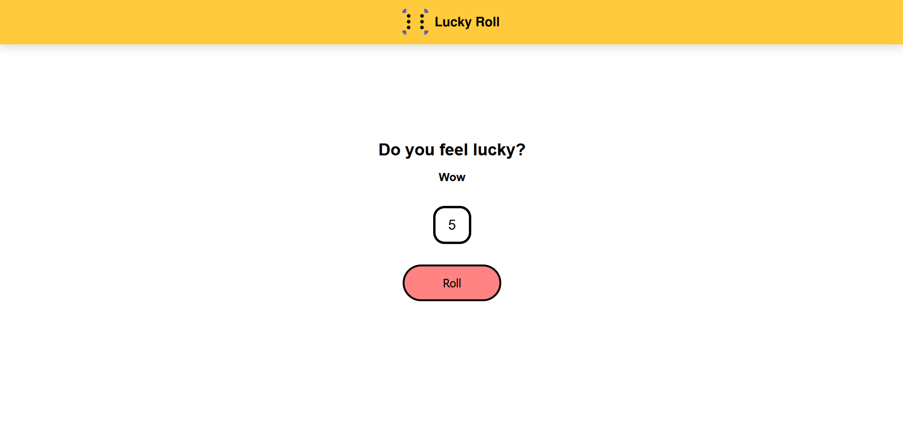

Lucky Roll
Sito web che simula il lancio dei dadi a sei faccie.

Linguaggi di programazzione usati:
Softwer esterni usati:
Visita il sito:
https://fraconv.github.io/Lucky-Roll/
Creazione del logo
Per la creazione del logo mi sono ispirato ad un dado a sei faccie, illustrandone solo gli angoli e il punteggio di una delle faccie,
che in questo caso è il 6.
Accanto alla figura del dado si trova il nome del sito "Lucky Roll" scritto in Sans Serif.
Il risultato è un logo indentificativo bello da vedere e in tema con il sito.

Color palette logo:
#5a5aba
#000000
Il suo colore che tende verso il viola va ha ricchiamare il mistero (il mistero su che cosa potrebbe uscire ogni volta che si clicca sul tasto "roll")
mentre il nero richiama eleganza e serietà.
Tipografia:
Il font utilizzato per questo logo è Roboto Mono Regular.
Design del sito:
Il design del sito è basato su uno stile molto minimal per via del contenuto che offre e per un esperienza pulita.
L'header comprende solo il logo, posizionato al centro e il footer comprende il copyright del sito.
La pagina è strutturata con tutti gli elementi centrati in essa. Una scritta al centro del sito recita "Do you feel lucky?" con sotto un quadrato, ovvero il dado,
e ancora più sotto un bottone rosa per il lancio, animato all'hover.
Ad ogni click sul tasto "roll" il dado si muoverà con una breve animazione, dando un punteggio casuale da 1 a 6.
Insieme al punteggio apparirà sopra al dado una scritta che commenterà il punteggio, la scritta cambierà a seconda
del punteggio apparso.


Color palette header:
#ffcb3c
Color palette body:
#ffffff
Color palette footer:
#443e3e
Tipografia:
Il font utilizzato per questo sito è Encode Sans.
Versione mobile:
Per la versione mobile il design del sito rimane invariato e privo di eventuali bug.